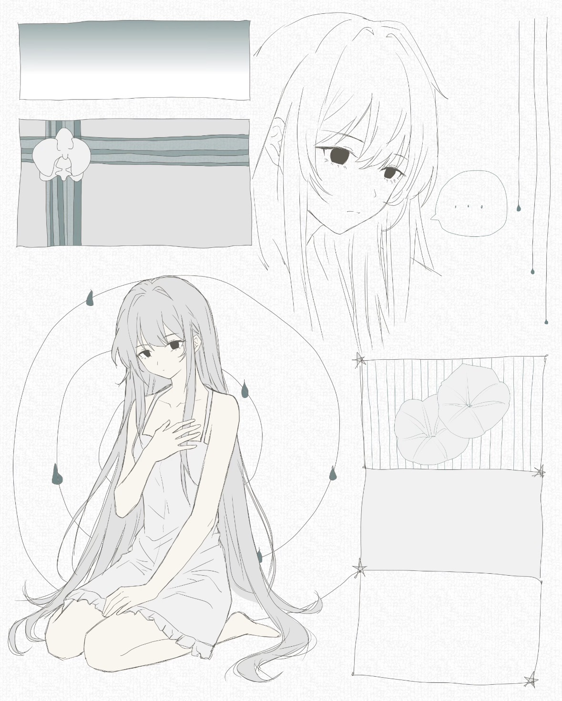
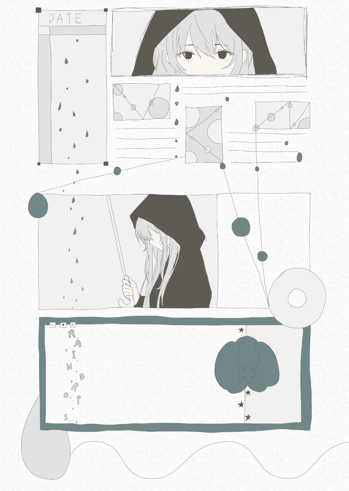
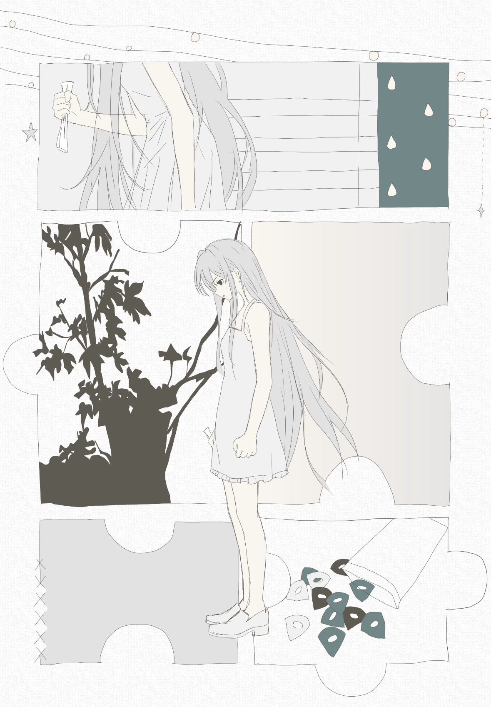

Orchid



Art by HazezZ
作品介绍
《Orchid》写给我自己。
它诞生于一段被学业与未来反复拉扯的时期，表面仍然维持着克制与秩序，内里却早已被焦灼、烦躁与迷茫反复侵蚀。这里的 Orchid 并不只是柔美的意象，更象征一种近乎倔强的自持：高洁、高雅、淡泊，也带着某种不肯轻易崩塌的，极强的自尊心。正因如此，那些被包裹在光鲜外壳之下、难以言明的悲伤，才最终被写进了这首歌。
这首作品在音乐上同样保留了这种矛盾感，我的创作始终同时受到日系摇滚与前卫核的影响，两种编制很难被真正融合，一边是更敏感、直接、情绪化的线条，一边是更紧张、压迫、撕裂的推进。它们在这首歌里无法被刻意调和，而是以一种并不稳定甚至略带冲突的方式共存下来，这也和我面对未来时的状态完全一致，无法完全向任何一边倾斜。
整首歌写得很快，这种速度本身也像一种情绪决堤，187 BPM 的推进下，主歌与 riff 保留着持续拉扯的紧绷感，而副歌却走向了和以往不同的氛围，不再只是向前冲，而更像一种无可奈何之下仍然没有放弃在乎的悲伤，副歌末尾衔接转调与重新落回 main riff 的那句旋律则留下了一种近乎灰色的迷茫。结尾第一次尝试的清音 solo，也没有选择解决什么，而是把挣扎本身留在了声音里。
音乐上的想法
贝斯与人声开场。最初的灵感来自トゲナシトゲアリ的《空白とカタルシス》，但实际写出的编排与它很不一样。《Orchid》的贝斯不是断音，也不围绕同一个音反复，而是保留了一条较完整、持续向前的线。这一段本身就是主歌的前半，而不是唱完后立刻转入前奏或间奏。我很喜欢这种几乎撤掉所有东西，只让贝斯托着人声往前走的感觉。
开放扫弦。吉他进入后反而写得非常简单，只有直接的和弦扫奏。这里需要的不是复杂度，而是一种很传统、很身体化的摇滚感：像一边唱歌，一边闭着眼睛皱着眉把和弦扫下去。因此我刻意没有加任何花。
混合拍与 main riff。接下来这个介于“主歌后半”和 pre-chorus 之间的段落，由 1 小节 4/4、1 小节 7/8、2 小节 4/4 组成，整个组合重复两遍。7/8 像在原本顺畅的句子里突然少走半步，让身体出现轻微的踉跄。紧接着，吉他、贝斯和鼓在 main riff 中重新咬合，把松散的主歌一下收紧到我最熟悉的前卫核语言里。
同一旋律，三种主歌编配。Main riff 之后，人声回到同一条主歌旋律，但承载它的编配完全改变：吉他在根音 palm mute 与 ghost note 之间交替，让相同旋律获得新的重心。我不太想用“第二遍多加一轨东西”的方式制造递进，而更喜欢直接重写底层节奏。歌曲后段第三次回到主歌时，底下进一步变得 djenty，上方穿插旋律性点缀；贝斯则使用混拨，在严密的节奏里保留自己的颗粒与动作。段落后半逐渐堆成接近音墙的状态，不强调单件乐器，而让整体一起压过来。
旋律交接与转调。Pre-chorus 中，人声只唱前半，之后把主旋律直接交给电吉他。吉他以连续十六分音符继续向前推，并在过程中从 E major 进入 A major；若以 E major 为原调，这里相当于转向 IV 级的 A major。
副歌的双重语言。副歌的旋律与和声带有一种我很喜欢的华语流行感，但下方仍然是前卫核的乐器语言。前半较为打开，让人声、旋律与和声成为主体；后半的吉他明显向 djent 靠拢，节奏密度和低频一起增加，在不更换副歌主题的情况下继续向上推进。结束后歌曲转回 E major，main riff 再次出现。
清新但锁死的 breakdown。这一段一点都不凶，甚至很清新：两轨清音吉他和钢琴在上方做很轻的点缀，下面的吉他、贝斯与鼓却严丝合缝地弹着 djent。理论上这两种质感似乎不该同时出现，但我很喜欢上方像空气一样漂浮、下方全部锁死在节奏格子里的反差。
最后一次副歌。副歌没有立刻回到原来的 A major，而是先在 E major 中淡淡走过四小节，再重新转回 A major。熟悉的材料因此先被放在一个“不对的位置”，四小节后才真正回到原来的调性。
清音 Solo 与结尾。一个小节的过渡后进入清音电吉他 Solo——这是我很少写的东西。Solo 先独自发展八小节，随后全乐队转回 E major 并重新弹起 main riff；Solo 不停，而是继续覆盖在 riff 上方，用留白避免与下面的节奏争抢。自由、漂浮的清音线条与已经反复出现的 main riff 在转调的一瞬间叠到一起，是我最喜欢的部分。最后其他乐器逐渐结束，只剩清音吉他，在一串三连音中自行消失，没有给挣扎安排一个正式的结论。
歌词（Part 1）
久久萦绕在心中的过往
着迷着为了感到伤感而被创造的想象
我到底有什么样的向往？
不可能是可抵达的理想
即使被逃避的冲动驱使
从这里跑出去也是无法抵达任何城市
我明明不是个那样的人
但我又为什么默然应允
已经被弄丢的钥匙
被自己关上的退路
水流向我应该怎么阻绝？
记忆却总是被混乱改头换面真假难解
某一种短暂幻想的死结
随之捉弄我 背叛我 宣泄
一切都归咎于我
忙碌、重复、空无一物
不在那里、不在那里
为了所谓脑袋里明白的道理
不合时宜、不合时宜
明明下定决心但却无法言意
不在那里、不在那里
想摧毁一切却无法鼓起勇气
不留痕迹、不留痕迹
干脆直接用这片空白抹杀我的呼吸
歌词（Part 2）
无论多么困难都会一直
想留下抓痕而目不斜视凝望前方而行
不想输才无动于衷而已
但到底是为了什么意义？
把它埋起来吧我会遗忘
让雨水冲刷之后藏在兜帽下转身离场
对那些放弃的未来来讲
只是排列琴弦上的悲伤
还要我承受多久
不行、不够、不想认输
不在那里、不在那里
为了所谓脑袋里明白的道理
不合时宜、不合时宜
无数次重复的日常只剩压抑
不再提及、不再提及
曾经以为那就是梦想的意义
不想回忆、不想回忆
干脆直接用这片空白抹杀我的呼吸